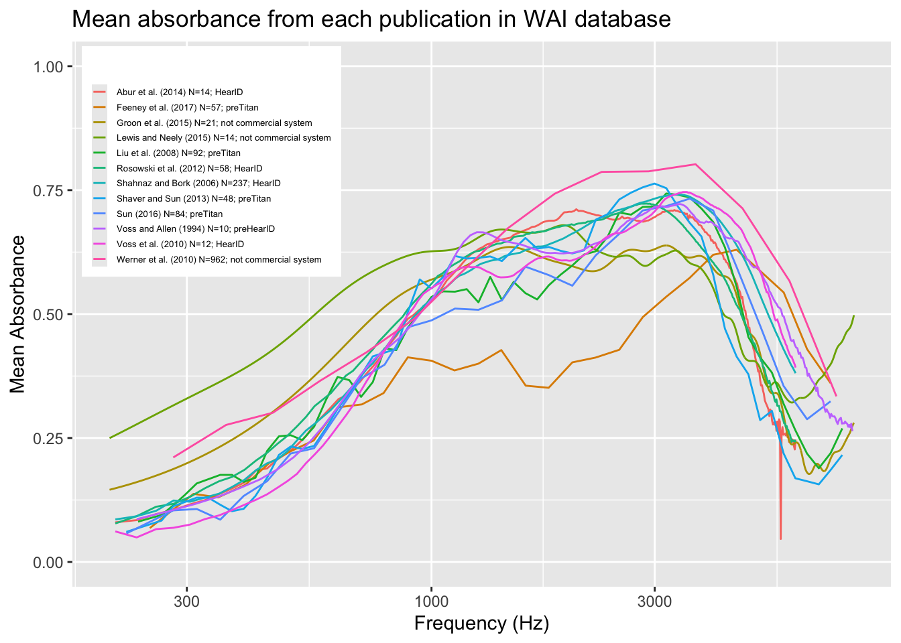
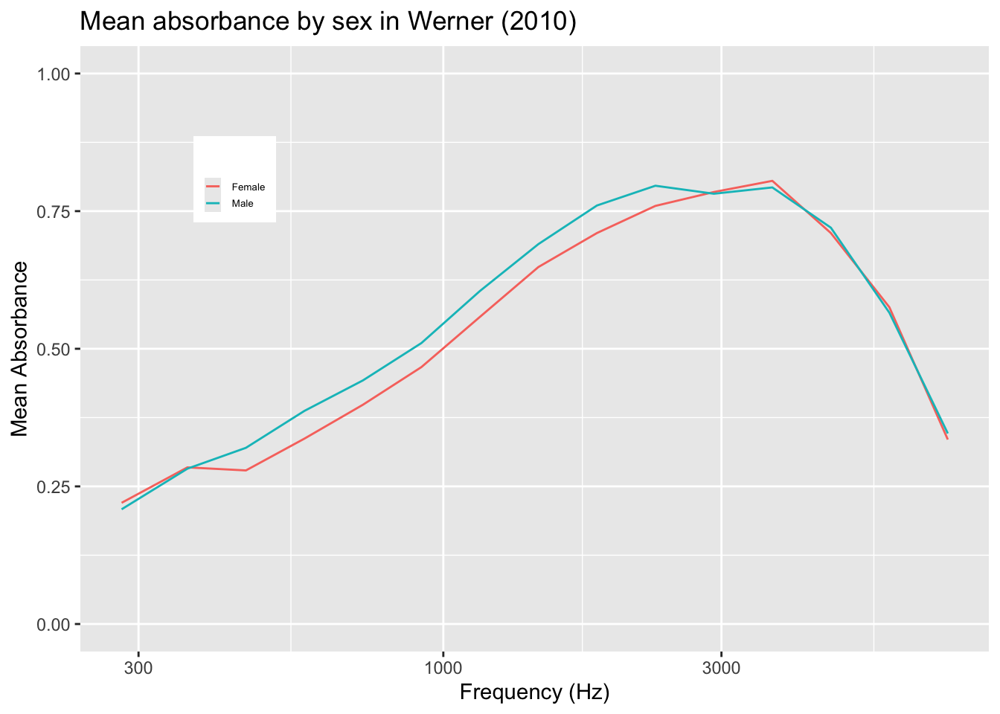
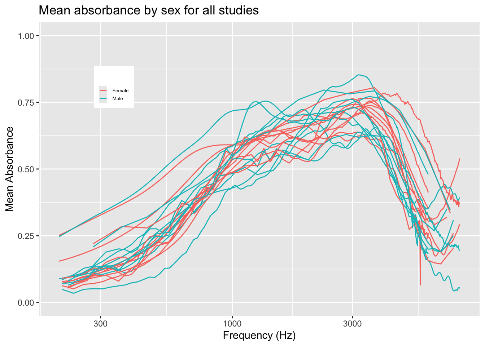

absorbance3 <- DBI::dbGetQuery(con_wai,"SELECT
info.Identifier,
CASE
WHEN m.Instrument = 'other' THEN 'not commercial system'
ELSE m.Instrument
END AS Instrument,
info.AuthorsShortList,
info.year,
COUNT(DISTINCT m.SubjectNumber, m.Ear) AS Unique_Ears,
AVG(m.Absorbance) AS mean_absorbance,
m.frequency
FROM (
SELECT
Identifier, SubjectNumber, Ear, frequency, Instrument, AVG(Absorbance) AS Absorbance
FROM Measurements
GROUP BY Identifier, SubjectNumber, Ear, frequency, Instrument
) AS m
JOIN PI_Info as info ON info.Identifier = m.Identifier
JOIN PI_Info_OLD as info_old ON info.Identifier = info_old.Identifier
WHERE
m.frequency < 8000 AND m.frequency > 200
GROUP BY info.Identifier, m.Instrument, info.AuthorsShortList, info.year, m.frequency
ORDER BY info.AuthorsShortList, m.frequency ASC")WAI measures
For this project, I’ll make some graphs of Wideband acoustic immittance (WAI) measures, specifically absorbance. The first part will be creating a graph to match the work from Voss (2020). It will plot Frequency vs. Absorbance across 12 studies.
This project calls for SQL joining. Because of the multiple studies, different frequencies, issues of some ears tested more than once, their will be a lot of jostling around of the data. After that, I can use the info tables to get the required information about the authors and year of the studies. Then some ggplot magic!
absorbance3 |>
ungroup() |>
mutate(colorID = paste0(AuthorsShortList, " (", year, ") N=", Unique_Ears, "; ", Instrument)) |>
ggplot(aes(x = frequency, y = mean_absorbance, group = Identifier, color = colorID)) +
geom_line() +
ylim(0, 1) +
xlim(0, 8000) +
scale_x_log10() +
labs(
x = "Frequency (Hz)",
y = "Mean Absorbance",
title = "Mean absorbance from each publication in WAI database",
color = ""
) +
theme(
legend.position = c(0.17, 0.78),
legend.text = element_text(size = 5),
legend.key.size = unit(0.3, "cm"),
legend.spacing.x = unit(0.2, "cm"),
legend.spacing.y = unit(0.1, "cm"),
legend.background = element_rect(fill = "white", size = 0.5)
)
After re-interpreting the caption of the original table, I questioned my approach to the averaging of absorbance. My take was that if the same subject, during the same study, had their ear measured at the same frequency more than once, then that would be treated as a single observation. The average would then be computed for the entire study. This takes away unfair weighting of a subjects absorbance level. I accomplished that by grouping by study, patient, ear, frequency, and taking absorbance as the average, to remove any duplicate ear measures. I nested this table inside another select, which was joined with the PI_info, to get the short version of author list, and PI_info_old, to filter only the studies used in the graph. Then I removed measurements that used frequencies outside the range, and did a “CASE WHEN” to turn the “other” instruments into “not commercial system.” For ggplot, I did a log transform on the x-axis, seems to match up very well with the graph in the publication. Then did some delicate movement of the legend to put it in the top left corner. Just by the eye test, most of the lines match up, some… not so much. Unsure what tweaks were made, but overall, it looks solid.
##!!!!!!! PART 2 !!!!!!!!
Lets see if there’s any difference between sex’s. Similar approach to last time, but we’ll just look at one study. Since everyone uses different frequency levels, combining all studies doesn’t and grouping by frequencies doesnt create nice averages. If all studies used the same frequencies, then grouping and averaging would work out better. If I do male vs. female individualy for every study, but I fear that will over populate the screen. But lets do both, male vs. female for one study, then for each study sepratley.
absorbance_sex1 <- DBI::dbGetQuery(con_wai,"
SELECT
TRIM(s.Sex) AS Sex,
AVG(m.Absorbance) AS mean_absorbance,
m.frequency,
info.Identifier
FROM Measurements as m
JOIN PI_Info as info ON info.Identifier = m.Identifier
JOIN PI_Info_OLD as info_old ON info.Identifier = info_old.Identifier
JOIN Subjects AS s ON s.Identifier = m.Identifier AND s.SubjectNumber = m.SubjectNumber
WHERE
m.frequency < 8000 AND m.frequency > 200 AND
(TRIM(s.Sex) = 'Female' OR TRIM(s.Sex) = 'Male') AND
info.Identifier = 'Werner_2010'
GROUP BY TRIM(s.Sex), m.frequency, info.Identifier
ORDER BY TRIM(s.Sex) ASC
")absorbance_sex1 |>
ungroup() |>
ggplot(aes(x = frequency, y = mean_absorbance, group = interaction(Sex, Identifier), color = Sex)) +
geom_line() +
ylim(0, 1) +
xlim(0, 8000) +
scale_x_log10() +
labs(
x = "Frequency (Hz)",
y = "Mean Absorbance",
title = "Mean absorbance by sex in Werner (2010)",
color = ""
) +
theme(
legend.position = c(0.17, 0.78),
legend.text = element_text(size = 5),
legend.key.size = unit(0.3, "cm"),
legend.spacing.x = unit(0.2, "cm"),
legend.spacing.y = unit(0.1, "cm"),
legend.background = element_rect(fill = "white", size = 0.5)
)
This shows that there isn’t much gender difference. The line are fairly consistent with each other. This only shows one study however. It could be helpful to view them all.
absorbance_sex <- DBI::dbGetQuery(con_wai,"
SELECT
TRIM(s.Sex) AS Sex,
AVG(m.Absorbance) AS mean_absorbance,
m.frequency,
info.Identifier
FROM Measurements as m
JOIN PI_Info as info ON info.Identifier = m.Identifier
JOIN PI_Info_OLD as info_old ON info.Identifier = info_old.Identifier
JOIN Subjects AS s ON s.Identifier = m.Identifier AND s.SubjectNumber = m.SubjectNumber
WHERE
m.frequency < 8000 AND m.frequency > 200 AND
(TRIM(s.Sex) = 'Female' OR TRIM(s.Sex) = 'Male')
GROUP BY TRIM(s.Sex), m.frequency, info.Identifier
ORDER BY TRIM(s.Sex) ASC
")absorbance_sex |>
ungroup() |>
ggplot(aes(x = frequency, y = mean_absorbance, group = interaction(Sex, Identifier), color = Sex)) +
geom_line() +
ylim(0, 1) +
xlim(0, 8000) +
scale_x_log10() +
labs(
x = "Frequency (Hz)",
y = "Mean Absorbance",
title = "Mean absorbance by sex for all studies",
color = ""
) +
theme(
legend.position = c(0.17, 0.78),
legend.text = element_text(size = 5),
legend.key.size = unit(0.3, "cm"),
legend.spacing.x = unit(0.2, "cm"),
legend.spacing.y = unit(0.1, "cm"),
legend.background = element_rect(fill = "white", size = 0.5)
)
dbDisconnect(con_wai, shutdown = TRUE)This tells us about as much as the single-study graph— not much difference. One note, some studies only use one sex, for example Abur 2014 only tested females. From this, while some differences can be seen visually, there’s nothing so obvious to make me assume sex impacts absorbance.
To access the data used here, visit this website: http://www.science.smith.edu/wai-database/. The first graph was meant to mimic the work of Susan E Voss, her much better looking graph can be seen at this website: https://pmc.ncbi.nlm.nih.gov/articles/PMC7093226/